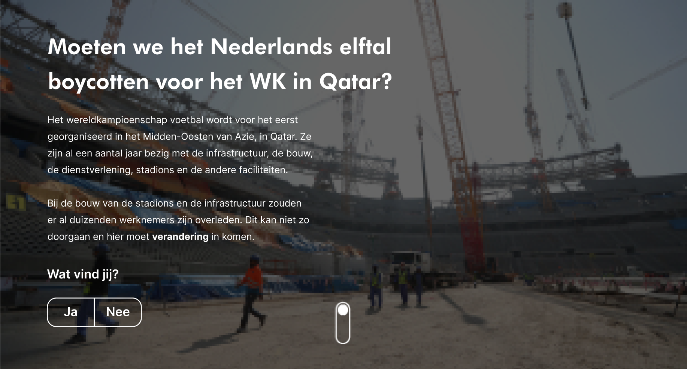

Meesterproef
Moeten we het wereldkampioenschap voetbal in Qatar boycotten of niet?
Een 22-jarige Communicatie & Multimedia design student aan de Hogeschool van Amsterdam. Ik specialiseer op het gebied van interaction design, user experience design en behaviour design. Als creatieve designer houd ik mezelf dagelijks bezig met grafische vormgeving en help ik graag met het verbeteren van gebruikerservaringen. Daarnaast streef ik bij een ontwerpprobleem naar een ethisch goede oplossing voor de eindgebruiker.
In het derde jaar heb ik de minor Visueel Interface Design gevolgd. Ik heb veel geleerd en ben erg gegroeid als UX designer. Ik heb vooral geleerd tijdens deze minor dat ik meer 'out the box' moet denken. Ik ben nu erg gewend aan het ontwikkelen van websites of applicatie, maar ik wil me in de toekomst meer opstellen op andere gebieden. Vooral het ontwikkelen van animaties vond ik erg interessant en leuk om te doen en daar wil ik zeker beter in worden. Ook vond ik het erg leuk om aan het werk te gaan met p5 en heb ik veel geleerd op het gebied van HTML & CSS. Tijdens deze vakken heb ik vooral geleerd om mezelf meer de tijd te geven en het niet snel op te geven. Uiteindelijk heeft mijn motivatie en doorzettingsvermogen ervoor gezorgd dat ik mijn minor heb gehaald!
Hieronder kan je mijn werk bekijken van de afgelopen maanden!
Moeten we het wereldkampioenschap voetbal in Qatar boycotten of niet?
Een app om gezamelijk met je vrienden en familie corona-proof te sporten.
Nieuwsgierig wat er onderwater allemaal te vinden is? Duik dan nu in het diepen.
Een mini-game gebaseerd op mijn fitness verslaving. Ze noemen we ook wel de Joel Beukers van CMD!
Drink alcohol met maten en weet de consequenties! Vooral jongeren hebben hier erg veel moeite mee en hebben hier hulp bij nodig.
Mijn eerste animatie ontwikkeld in de stijl van Avatar. Kies ik voor een lucht, water, vuur of aardemeester?
Hoe ontwerp je ondertitels voor iemand die slecht tot niet horend is?
Maak een vierletter woord van de stad, waar jij woont!